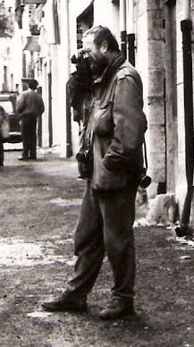

CC BY-SA · Esculapio · Wikimedia Commons
Josef Koudelka
1938 · Boskovice, Txecoslòvàquia
Magnum Photos · Exili · Gitanos · Documentalisme de proximitat
Resum biogràfic
Enginyer aeronàutic txec que va descobrir la fotografia documentant el teatre. El 1968 va fotografiar els tancs soviètics entrant a Praga amb un rellotge de canell al primer pla — imatge icònica del s.XX. Va sortir de Txecoslòvàquia amb un passaport d'una sola vegada. 17 anys d'exili fotografiant amb passaport de la Creu Roja. Vuit anys documentant les comunitats gitanes d'Europa: Gypsies (1975). Membre de Magnum des de 1971, inicialment anònim. Avui viu a París i segueix fotografiant.
El seu segell
La fotografia com a necessitat existencial. El drama, el ritme fort, la presència física del fotògraf en l'escena. El projecte de temps llarg com a forma de vida.
El gran angular com a drama
El 25mm és la seva signatura dels anys 60–70. Distorsiona els extrems del quadre i dramatitza l'escena. Les figures properes es fan gegants; el fons s'allunya. Crea una tensió visual constant entre figura i espai que no és possible amb focals normals.
Presència física i aproximació
Molt a prop, sense por. S'agenolla, s'estira, es fica al mig de l'acció. La seva presència és part de la imatge. No desapareix — el contrari: el seu cos és una eina. La distància mínima obliga a la confiança mútua.
Empujat i gra
El Kodak Tri-X empujat a 800–1600 ASA li dona un gra dur i expressiu. No és un defect tècnic — és part del vocabulari visual. El gra reforça la duresa de les escenes: l'exili, la pobresa, el drama de la Praga del 68.
La panoràmica (anys 80 en endavant)
A partir dels anys 80 comença a usar la càmera panoràmica 6×17. El format horitzontal amplíssim —casi 180°— li permet capturar la totalitat dels paisatges devastats que documenta als projectes sobre Europa industrial i zones en conflicte.
Praga, 21 d'agost de 1968
Invasion 68 · Aperture · aperture.org
© Josef Koudelka / Magnum Photos
Gitanos, Romania, c. 1968
Gypsies · Aperture · aperture.org
© Josef Koudelka / Magnum Photos
Exils, França, c. 1980
Exils · Delpire · magnumphotos.com/photographer/josef-koudelka
© Josef Koudelka / Magnum Photos